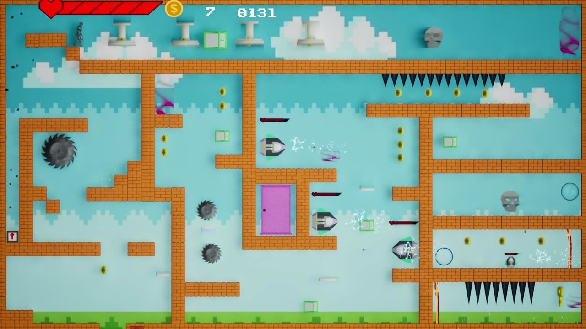
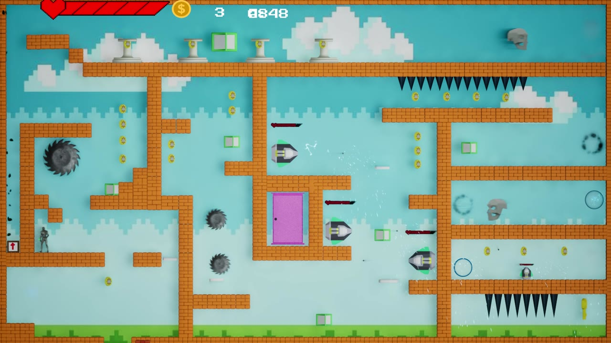
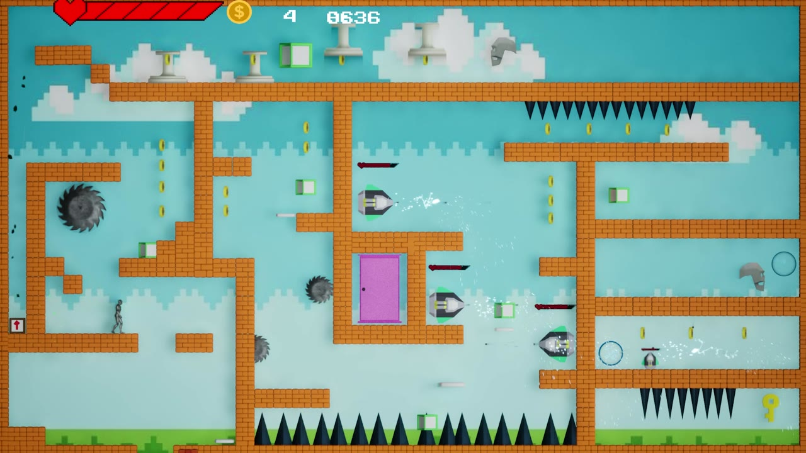

SCAD / Fall 2025 / First-semester Unreal Engine work
Fixed Scream
One screen. A whole obstacle course.
A fixed-screen arcade platforming project made in Unreal Engine, with a pixel-art presentation and a compact field of hazards and collectibles.
- Creator
- Zhaolin Hu
- Engine
- Unreal Engine
- Focus
- Arcade gameplay
Level layout & feedback - Format
- Recorded project demo
3:07 · Full recording

01 / Project in motion
Watch the complete demonstration.
Full-length recording with its original audio, optimized for web playback. Open video directly ↗
02 / Experience
One screen. A whole obstacle course.
The recording opens on a pixel-art start menu and then shows an extended gameplay session in one fixed-screen arena. Platforms and walls divide the play space, while coins, keys, spikes, moving hazards, and on-screen counters make the player’s progress visible.
The whole level stays in view
The fixed camera keeps the arena visible at once. Paths, obstacles, and collectibles can be read in relation to the full layout rather than revealed by a scrolling camera.
A compact challenge space
Narrow corridors, jumps, spikes, and moving obstacles create a dense route through the level. The recording shows repeated movement through different sections of the arena.
Immediate visual feedback
A heart display, collectible count, and timer sit above the play area. The menu and gameplay share a colorful pixel-art visual language.
03 / In-game views
Captured from the running project.


04 / Project context
Early exploration in real-time interaction.
Created during my first semester at SCAD in Fall 2025, this Unreal Engine project is part of my early work in building interactive experiences. This page presents the recorded result and the interactions visible in the demo.
Project by Zhaolin Hu. Screenshots are taken from the original recording. Third-party assets and audio belong to their respective creators; original on-screen credits are retained where present in the video.